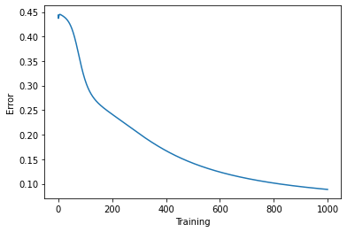
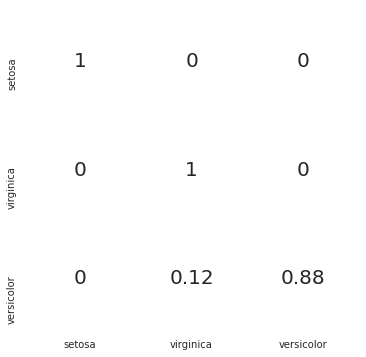

## Upload data from Module 3 data folder:
# data1.csv
# Note, make sure not to upload the data1.csv from Module 2Importing Libraries and Data
Cell 1 Importing libraries
::: {#cell-4 .cell _cell_guid=‘0bb3fe27-8f88-5516-eefc-649a61ce62ae’ _uuid=‘e9b103b270aa7e62add41bce5fc79b1ed7f2d3a0’ cellView=‘code’ execution_count=2}
import numpy as np
import pandas as pd
import seaborn as sns
import matplotlib.pyplot as plt
%matplotlib inline:::
Cell 2 Reading the data
::: {#cell-6 .cell _cell_guid=‘504c384b-1248-0bfa-92d8-0909a505438f’ _uuid=‘8af2462230f4b596a462822bcfaec54ca5e0f362’ executionInfo=‘{“elapsed”:13,“status”:“ok”,“timestamp”:1621967870877,“user”:{“displayName”:“Leif Wilm”,“photoUrl”:““,”userId”:“04857518338297398200”},“user_tz”:360}’ outputId=‘acf66200-dbe9-4d59-bc67-29abcec34fd0’ execution_count=6}
#read data from csv
iris = pd.read_csv("data/IrisData1.csv")
iris.head()| Sepal_Length | Sepal_Width | Petal_Length | Petal_Width | Species | |
|---|---|---|---|---|---|
| 0 | 5.1 | 3.5 | 1.4 | 0.2 | Iris-setosa |
| 1 | 4.9 | 3.0 | 1.4 | 0.2 | Iris-setosa |
| 2 | 4.7 | 3.2 | 1.3 | 0.2 | Iris-setosa |
| 3 | 4.6 | 3.1 | 1.5 | 0.2 | Iris-setosa |
| 4 | 5.0 | 3.6 | 1.4 | 0.2 | Iris-setosa |
:::
Cell 3 Dataset verification
#Check the dataset to make sure no data is missing and Check the class labels
def verify_dataset(data):
#if any of the rows have missing value return datas missing
data_found = 1
for each_column in data.columns:
if data[each_column].isnull().any():
print("Data missing in Column " + each_column)
#if any rows are not missing return Dataset is complete. No missing value
quit()
if data_found == 1:
print("Dataset is complete. No missing values. Ok")
return
verify_dataset(iris)Dataset is complete. No missing values. OkCell 4 One hot encoding function
::: {#cell-10 .cell _cell_guid=‘ec0bfe6e-c47c-f12f-0a1f-6a461105cf70’ _uuid=‘e624be71b3eb8591ff21ebdb807655ba03a2cabe’ execution_count=9}
#This function accepts an array of categorical variables and returns the one hot encoding
def to_one_hot(Y):
n_col = np.amax(Y) + 1
binarized = np.zeros((len(Y), n_col))
for i in range(len(Y)):
binarized[i, Y[i]] = 1.
return binarized:::
Cell 5 Data normalization function
#Normalize array
def normalize(X, axis=-1, order=2):
l2 = np.atleast_1d(np.linalg.norm(X, order, axis))
l2[l2 == 0] = 1
return X / np.expand_dims(l2, axis)Cell 6 Activation function definitions
#sigmoid and its derivative
def sigmoid(x):
return 1/(1+np.exp(-x))
def sigmoid_deriv(x):
return sigmoid(x)*(1 - sigmoid(x))
def user_softmax(A):
expA = np.exp(A)
return expA / expA.sum(axis=1, keepdims=True)Cell 7 Selecting features from a list
'''Change the values below'''
sepal_length = True
sepal_width = True
petal_length = True
petal_width = True
'''Change the values above'''
feature_list = [sepal_length,sepal_width,petal_length,petal_width]Cell 8 Selecting features and running the normalization function
#Specifying the input data "x"
columns = ['Sepal_Length', 'Sepal_Width', 'Petal_Length', 'Petal_Width']
x = pd.DataFrame(iris, columns=columns)
x = x.to_numpy()
x = x[:,feature_list]
x = normalize(x)Cell 9 Labelling output data and applying one hot encoding
::: {#cell-20 .cell _cell_guid=‘635a6d0f-b62b-a978-21c2-445f994e0458’ _uuid=‘5f737ba55d570d5effe9fbb0f3a1267c4f44fd0a’ execution_count=16}
#Replace the species with 1,2 or 3 as appropriate
label_dict = dict()
label_dict['0'] = 'setosa'
label_dict['1'] = 'virginica'
label_dict['2'] = 'versicolor'
iris['Species'].replace(['Iris-setosa', 'Iris-virginica', 'Iris-versicolor'], [0, 1, 2], inplace=True)
#Get Output, flatten and encode to one-hot
columns = ['Species']
y = pd.DataFrame(iris, columns=columns)
y = y.to_numpy()
y = y.flatten()
y = to_one_hot(y)
yarray([[1., 0., 0.],
[1., 0., 0.],
[1., 0., 0.],
[1., 0., 0.],
[1., 0., 0.],
[1., 0., 0.],
[1., 0., 0.],
[1., 0., 0.],
[1., 0., 0.],
[1., 0., 0.],
[1., 0., 0.],
[1., 0., 0.],
[1., 0., 0.],
[1., 0., 0.],
[1., 0., 0.],
[1., 0., 0.],
[1., 0., 0.],
[1., 0., 0.],
[1., 0., 0.],
[1., 0., 0.],
[1., 0., 0.],
[1., 0., 0.],
[1., 0., 0.],
[1., 0., 0.],
[1., 0., 0.],
[1., 0., 0.],
[1., 0., 0.],
[1., 0., 0.],
[1., 0., 0.],
[1., 0., 0.],
[1., 0., 0.],
[1., 0., 0.],
[1., 0., 0.],
[1., 0., 0.],
[1., 0., 0.],
[1., 0., 0.],
[1., 0., 0.],
[1., 0., 0.],
[1., 0., 0.],
[1., 0., 0.],
[1., 0., 0.],
[1., 0., 0.],
[1., 0., 0.],
[1., 0., 0.],
[1., 0., 0.],
[1., 0., 0.],
[1., 0., 0.],
[1., 0., 0.],
[1., 0., 0.],
[1., 0., 0.],
[0., 0., 1.],
[0., 0., 1.],
[0., 0., 1.],
[0., 0., 1.],
[0., 0., 1.],
[0., 0., 1.],
[0., 0., 1.],
[0., 0., 1.],
[0., 0., 1.],
[0., 0., 1.],
[0., 0., 1.],
[0., 0., 1.],
[0., 0., 1.],
[0., 0., 1.],
[0., 0., 1.],
[0., 0., 1.],
[0., 0., 1.],
[0., 0., 1.],
[0., 0., 1.],
[0., 0., 1.],
[0., 0., 1.],
[0., 0., 1.],
[0., 0., 1.],
[0., 0., 1.],
[0., 0., 1.],
[0., 0., 1.],
[0., 0., 1.],
[0., 0., 1.],
[0., 0., 1.],
[0., 0., 1.],
[0., 0., 1.],
[0., 0., 1.],
[0., 0., 1.],
[0., 0., 1.],
[0., 0., 1.],
[0., 0., 1.],
[0., 0., 1.],
[0., 0., 1.],
[0., 0., 1.],
[0., 0., 1.],
[0., 0., 1.],
[0., 0., 1.],
[0., 0., 1.],
[0., 0., 1.],
[0., 0., 1.],
[0., 0., 1.],
[0., 0., 1.],
[0., 0., 1.],
[0., 0., 1.],
[0., 0., 1.],
[0., 1., 0.],
[0., 1., 0.],
[0., 1., 0.],
[0., 1., 0.],
[0., 1., 0.],
[0., 1., 0.],
[0., 1., 0.],
[0., 1., 0.],
[0., 1., 0.],
[0., 1., 0.],
[0., 1., 0.],
[0., 1., 0.],
[0., 1., 0.],
[0., 1., 0.],
[0., 1., 0.],
[0., 1., 0.],
[0., 1., 0.],
[0., 1., 0.],
[0., 1., 0.],
[0., 1., 0.],
[0., 1., 0.],
[0., 1., 0.],
[0., 1., 0.],
[0., 1., 0.],
[0., 1., 0.],
[0., 1., 0.],
[0., 1., 0.],
[0., 1., 0.],
[0., 1., 0.],
[0., 1., 0.],
[0., 1., 0.],
[0., 1., 0.],
[0., 1., 0.],
[0., 1., 0.],
[0., 1., 0.],
[0., 1., 0.],
[0., 1., 0.],
[0., 1., 0.],
[0., 1., 0.],
[0., 1., 0.],
[0., 1., 0.],
[0., 1., 0.],
[0., 1., 0.],
[0., 1., 0.],
[0., 1., 0.],
[0., 1., 0.],
[0., 1., 0.],
[0., 1., 0.],
[0., 1., 0.],
[0., 1., 0.]]):::
Cell 10 Train test splitting
x_y = pd.DataFrame(np.concatenate((x,y), axis=1))
def split_dataset_test_train(data,train_size):
data = data.sample(frac=1).reset_index(drop=True)
training_data = data.iloc[:int(train_size * len(data))].reset_index(drop=True)
testing_data = data.iloc[int(train_size * len(data)):].reset_index(drop=True)
return [training_data, testing_data]
train_test_data = split_dataset_test_train(x_y,0.7)
X_train = train_test_data[0].iloc[:,0:4].to_numpy()
X_test = train_test_data[1].iloc[:,0:4].to_numpy()
y_train = train_test_data[0].iloc[:,-3:].to_numpy()
y_test = train_test_data[1].iloc[:,-3:].to_numpy()Cell 11 Training function definition
def training(lr, batch_size, epochs):
w0 = 2*np.random.random((X_train.shape[1], hidden_size)) - 1
w1 = 2*np.random.random((hidden_size, 3)) - 1
bh = np.random.randn(hidden_size)
bo = np.random.randn(3)
rem = len(X_train) % batch_size
num_batch = len(X_train)//batch_size
if rem != 0:
num_batch += 1
#Errors - for graph later
errors = []
for epoch in range(epochs):
for curr_batch in range(num_batch):
# Finding the current batch
batch_start = curr_batch * batch_size
batch_end = batch_start + batch_size
input_batch = X_train[batch_start:batch_end]
# First layer propagation
zh = np.dot(input_batch, w0) + bh
layer1 = sigmoid(zh)
# Second layer propagation
zo = np.dot(layer1, w1) + bo
layer2 = user_softmax(zo)
########## Back Propagation
########## Phase 1
labels_batch = y_train[batch_start:batch_end]
layer2_error = layer2 - labels_batch
layer2w_delta = np.dot(layer1.T, layer2_error)
layer2b_delta = layer2_error
########## Phases 2
dcost_dah = np.dot(layer2_error , w1.T)
dah_dzh = sigmoid_deriv(zh)
layer1_error = dah_dzh * dcost_dah
layer1w_delta = np.dot(input_batch.T, layer1_error)
layer1b_delta = layer1_error
# Update Weights ================
w0 -= lr * layer1w_delta
bh -= lr * layer1b_delta.sum(axis=0)
w1 -= lr * layer2w_delta
bo -= lr * layer2b_delta.sum(axis=0)
error = np.mean(np.abs(layer2_error))
errors.append(error)
return [w0,bh,w1,bo], error, errorsCell 12 Evaluation function definition
def evaluation(params,tst_set):
w0 = params[0]
bh = params[1]
w1 = params[2]
bo = params[3]
# First layer propagation
zh = np.dot(tst_set, w0) + bh
layer1 = sigmoid(zh)
# Second layer propagation
zo = np.dot(layer1, w1) + bo
layer2 = user_softmax(zo)
return layer2Exercise 3.2
Cell 13 Selecting parameters and running the training function
'''Change these values'''
learning_rate = 0.01
batch_size = 10
hidden_size = 5
epochs = 1000
trained_params, error, errors = training(learning_rate, batch_size, epochs)Cell 14 Displaying the errors from training
#Plot the accuracy chart
accuracy = (1 - error) * 100
plt.plot(errors)
plt.xlabel('Training')
plt.ylabel('Error')
plt.show()
print("Training Accuracy " + str(round(accuracy,2)) + "%")
Training Accuracy 91.15%Cell 15 Running the evaluation function
y_pred = evaluation(trained_params,X_test)Cell 16 Displaying the confusion matrix
y_actual = pd.Series(y_test.argmax(axis=1))
y_pred = pd.Series(y_pred.argmax(axis=1))
cm = pd.crosstab(y_actual,y_pred).to_numpy()
if cm.shape[1]<3:
cm = np.concatenate((cm,np.zeros((3,3-cm.shape[1]))),axis=1)
cm_norm = np.array([cm[i][j]/cm[i].sum() for i in range(cm.shape[0]) for j in range(cm.shape[1])])
cm_norm = cm_norm.reshape(3,3)
import seaborn as sns
from matplotlib.colors import ListedColormap
df_cm = pd.DataFrame(cm_norm, index = ['setosa','virginica','versicolor'],
columns = ['setosa','virginica','versicolor'])
plt.figure(figsize = (6,6))
with sns.axes_style('white'):
sns.heatmap(df_cm,
cbar=False,
square=False,
annot=True,
annot_kws={"size": 20},
cmap=ListedColormap(['white']),
linewidths=0.5)
sns.set(font_scale=1.8)
Exercise 3.1
Cell 17 Function for testing flower dimensions
def input_test_seq():
sepal_length = float(input('Enter the Sepal length in cm :'))
while True:
if float(sepal_length)< 0 or float(sepal_length) > 10:
print('Inalid Entry. Enter Sepal Length <10 \n')
sepal_length = float(input('Enter the sepal length in cm :'))
continue
else:
break
sepal_width = float(input('Enter the Sepal width in cm :'))
while True:
if float(sepal_width) < 0 or float(sepal_width) > 10:
print('Invalid entry')
sepal_width = float(input('Enter the sepal width in cm :'))
continue
else:
break
petal_length = float(input('Enter the petal length in cm :'))
while True:
if float(petal_length) <0 or float(petal_length) > 10:
print('Inalid Entry. Please enter value less than 10')
petal_length = float(input('Enter the petal length in cm :'))
continue
else:
break
petal_width = float(input('Enter the petal width in cm :'))
while True:
if float(petal_width) < 0 or float(petal_width) > 10:
print('Invalid entry')
petal_width = float(input('Enter the petal width in cm :'))
continue
else:
break
predict_features = [sepal_length,sepal_width,petal_length,petal_width]
predict_features = normalize(predict_features)
result_category = evaluation(trained_params,predict_features)
result_category = result_category.argmax(axis=1)[0]
if result_category == 0:
value_prediction = "Iris-setosa"
elif result_category == 1:
value_prediction = "Iris-versicolor"
elif result_category == 2:
value_prediction = "Iris-virginica"
return value_prediction
flower_prediction = input_test_seq()
print("The flower is most likely", flower_prediction)Enter the Sepal length in cm :5.1
Enter the Sepal width in cm :3.4
Enter the petal length in cm :1.4
Enter the petal width in cm :0.2
The flower is most likely Iris-setosa